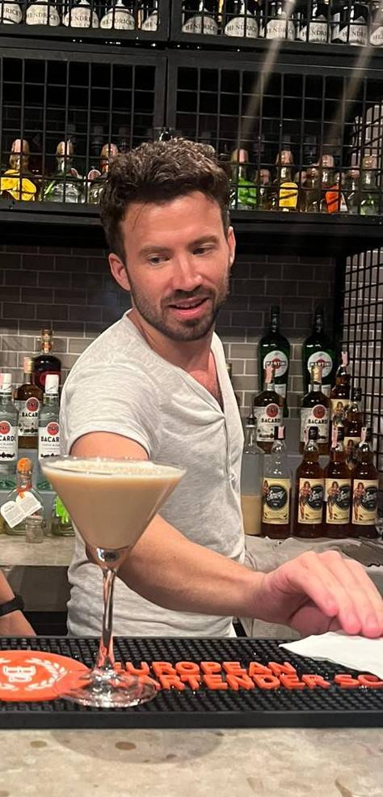

Startsida
Om mig
Välkommen till mitt lilla krypin! Martin här, från västkusten.
Kul att du har hittat till min sida. Här hittar du information om min stora passion, SNUS! "Snus, har byggt detta land" har många aldrig sagt, men det gör inte snuset mindre viktigt för det. Så vill du höra varför, klicka in på nästa flik, "Min Passion" och läs om detta underbara, fantastiska, tidsfördriv vi kallar snus!
Kort om mig

När jag inte snusar så blandar jag drinkar
Uppväxt på västkusten, 36 år gammal och ville testa på något nytt så ansökte för första gången i mitt liv till unviversitet,
och då till den emminenta utbildingen som webbdesigner.
Jobbat med allt mellan himmel och jord innan, men vill nu se vad jag kan åstadkomma framför tangentbordet och var detta kommer
ta mig i framtiden.